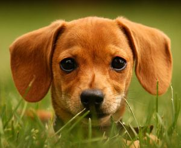

Прогулянки із цуценям
Прогулянка із собакою цілком необхідна для її гарного самопочуття, формування нервової системи, контакту з господарем. Саме на прогулянках відбувається становлення собаки як особистості. При цьому, вона одержує фізичне навантаження, що сприятливо позначається на здоров'ї щеняти.
Щеня виводять на вулицю 3-5разів в день. Собаку дорослішу за недостачею часу часто переводять на дворазовий вигул і годівлю. Рекомендується гуляти із собакою не менше 3-х годин у добу.
На прогулянку з щеням в перший раз
До вакцинації щеня можна виводити тільки на руках. Однак і після вакцинації багато власників воліють тримати цуценя в будинку навіть до півроку, щоб уникнути зараження якою-небудь інфекцією, наприклад, чумою або ентеритом. В місті, дійсно, велика кількість бродячих інфікованих собак, і щеня, на жаль, може заразитися.
Але ту ж інфекцію люди приносять у свою квартиру на взутті, одязі, сумках, які обнюхує щеня. Доза її, звичайно, менша, зате сприйнятливість до неї щеняти, що сидить будинку, вища. Адже саме на прогулянках, при обнюхуванні землі і різних предметів, а також при спілкуванні із собі подібними в щенят з'являється набутий імунітет, що дозволяє їм справлятися з інфекцією. А в щеняти, що сидить в будинку, його, природно, не буде.
Спостереження свідчать, що домашні щенята занедужують різними інфекційними хворобами не рідше, за тих, які постійно гуляють. А от хворіють вони важче і гинуть частіше.
Так що "домашній арешт" ризику не зменшує. Зате він гарантовано наносить собаці непоправну шкоду.
По-перше, пес має чимало шансів вирости кволим і хворобливим.
По-друге, він все життя буде почувати себе на вулиці незатишно, боятися транспорту, людей, собак. Привчати до життя в місті треба в "ніжному" віці, адже в маленького щеняти психіка пластичніша, а страхів ще нема.
По-третє, собака, що виріс удома ніколи не набуде навичок нормального спілкування із собі подібними. У неї буде порушена "соціальна адаптація" через відсутність спілкування в період найбільшої сприйнятливості: із чотирьох до восьми місяців.
У щеняти до двомісячного віку зберігається імунітет, отриманий у спадщину від матері, тому переважна більшість схем вакцинації починається із двомісячного віку (восьми тижнів). На першу прогулянку можна виходити із щеням через 14 днів після першої вакцинації, тому що за цей період організм щеняти виробляє досить стійкий імунітет. Однак все це стосується тільки здорових щенят, яких правильно ростять.
Якщо ви, зваживши всі "за" і "проти", вирішили із щеням гуляти, то не ставтеся до цього як до святого обов'язку витягти його на вулицю, чого б це не коштувало. При будь-яких ознаках нездужання прогулянки треба негайно припиняти. Краще перестрахуватися, пропустити одну-дві прогулянки і лише переконавшись, що щеня здорове, відновити їх.
Загальні принципи, яких варто дотримуватися в перші прогулянки із щеням:
Не можна починати прогулянки, якщо на вулиці мороз нижче - 10°С або жару вище +З0/С.
У перші кілька днів треба гуляти в тихому, захищеному від вітру місці, з мінімумом подразників. Починати знайомство з навколишнім світом потрібно поступово, інакше велика кількість людей, гуркіт транспорту можуть злякати маля, і страх залишиться надовго.
У перший тиждень щеня не повинно на вулиці промокати.
У перший місяць щеня не повинно на вулиці втомлюватися. Прогулянки повинні бути частими, але не тривалими. Тривалі прогулянки відразу після їжі неприпустимі: може провиснути спина і статися заворот. З маленьким щеням найкраще гуляти по п'ять-сім разів у день по 15-20 хвилин.
Якщо щеня злякається чого-небудь, потрібно погладжуванням, ласкавим словом, а іноді й смачним шматочком відволікти і заспокоїти його. Потім підвести ближче до цього предмета, який злякав, і дати можливість оглянути й обнюхати його.
На прогулянках щеня не повинно замерзати. Щеня не змерзне, якщо йому не дозволяти безцільно сидіти на одному місці. На вулиці він повинен рухатися, власне заради цього ви й вийшли з ним на прогулянку.
Щеня пізнає світ
Прогулянки із щеням не тільки привчають собаку не бруднити дому, але й привчають тварину існувати в місті, учать його адекватно реагувати на все різноманіття навколишнього світу. Гуляння не повинне обмежуватися "п'ятачком" двору, де юний пес, швидко освоївшись, стане прагнути одержати максимум нових вражень, за ними він готовий іти хоч на край світу. Йому потрібно спокійне місце, де він міг би погуляти без повідка, грати з однолітками. Активна натура щеняти буде шукати розваги самостійно, і вони можуть бути образливими.
Але найголовніше - через якийсь час хазяїн в очах собаки стає своєрідним придатком до повідця і нашийника, без яких неможливо вийти в улюблену двірську кампанію. Ви виявите, що собака не звертає на вас ніякої уваги й доставляє вам на прогулянці масу турбот. Як наслідок, хазяїн перестає спускати щеня з повідка, допускаючи ще більшу помилку. Цей згусток енергії, не виплеснувши свої емоції на вулиці, починає шкодити в будинку, перевертаючи все, що можна.
Усього цього неважко уникнути, якщо споконвічно дотримуватися наступних правил: на прогулянці давайте "їжу" розуму і тілу щеняти, намагайтеся проводити на вулиці час із максимальною користю. Завжди вибирайте нові маршрути, ніколи не стійте на місці. Собака, особливо кобель, повноцінно вигулюється винятково в русі, проходячи разом з хазяїном значну відстань, мітячи всю пройдену територію. Міняючи маршрути, ви поволі змушуєте щеня орієнтуватися на вас, завжди стежити за напрямком вашого руху. Щеня ще недостатньо впевнене в собі й буде спочатку іти за вами, щоб не загубитися, а згодом, подорослішавши, міркує, що кращого, ніж ви, супутника в далеких захоплюючих прогулянках йому не знайти.
Частину прогулянки потрібно відводити навчанню або повторенню вже вироблених навичок загального курсу дресирування. Така комбінована прогулянка, безсумнівно, буде корисна вашому псові, продовжить його активне життя.
Фізичні навантаження
Для повноцінного фізичного розвитку щеняти необхідно давати йому цілеспрямовані навантаження. Темп і навантаження прогулянок щеня вибирає сам. Прогулянки повинні бути тривалими, але не примусовими.
Поки цуцик малий, не слід дозволяти йому спускатися долілиць по сходам, щоб не зіпсувати спину і лапи, - перенесіть його на руках або скористайтеся ліфтом, а нагору нехай піднімається сам - це корисно для розвитку мускулатури. Не варто примушувати маленьке щеня стрибати через бар'єри - краще заохочуйте його активний рух на вулиці. З дорослішим щеням добре гуляти в прискореному темпі, корисні прогулянки по лісі й по пересіченій місцевості, влітку - по зеленій траві, взимку - по свіжому снігу. Однак надмірно не захоплюйтеся тренуванням ще незміцнілого щеняти - замість користі можна принести непоправну шкода. Фізичне навантаження треба вводити поступово, тому що перевантаження гальмує ріст, згубно впливає на ще не зміцнілі суглоби.
Пробіжки зручно влаштовувати за допомогою велосипеда. Тоді ви зможете давати повноцінне навантаження, не перевтомлюючись самим. Велосипедом не рекомендується користуватися раніше однорічного віку. Починаючи з 15-20 хвилин збільшуйте час пробіжок у міру дорослішання щеняти.
Починати плавати можна хоч із тримісячного віку, головне, щоб собака був досить впевнений у своїх силах і завжди перебував під доглядом власника, а вода була теплою. Але ніколи не затаскуйте щеня у воду насильно, нехай він зайде в неї сам - за м’ячиком або за хазяїном. Починаючи з півроку можна робити далекі запливи, навіть із використанням човна, коли щеня пливе поруч, а ви не кваплячись гребете. Якщо щеня втомилося - візьміть його в човен.
Яким би видом тренувань ви не займалися зі своїм псом, вас ніколи не повинен залишати здоровий глузд і почуття міри. Завжди орієнтуйтеся на тренованість і вік свого собаки.